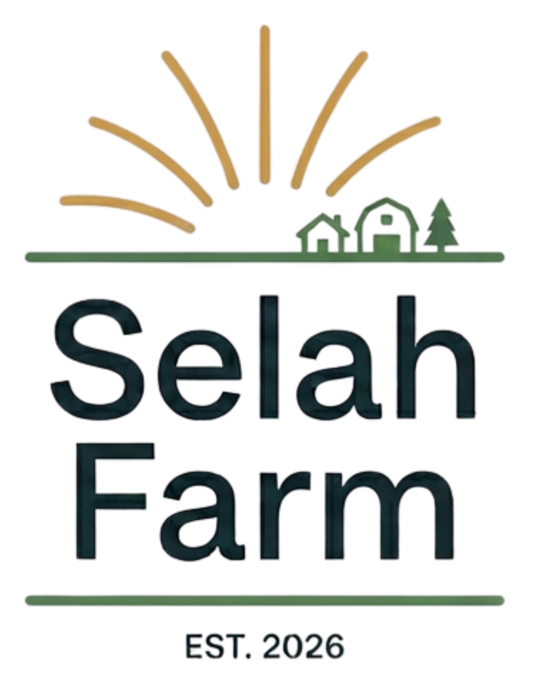

Slow-grown vegetables, herbs, and flowers from a small farm in southeast Michigan.
We grow the way we’d like you to eat: unhurried, and with attention. Rooted in soil health, heirloom genetics, and seasonal rhythm.
What We Grow
Harvested at peak flavor and fragrance in Southeast Michigan.
Vegetables
Heirloom tomatoes, crisp radishes, vibrant leafy greens, and tender bush beans raised with deep attention to soil biology.
Culinary Herbs
Fragrant basil, woody rosemary, earthy thyme, and bright mint cultivated for maximum essential oil density and aromatic power.
Cut Flowers
Seasonally harvested, chemical-free stems brought straight from field to bloom, reflecting the true cadence of our regional climate.
Selah (SEE-lah): a pause. A word written in the margins of old songs, meaning stop and take this in.
Established in 2026, Selah Farm is dedicated to science-backed soil health, high-density nutrition, and sustainable market gardening. We are spending 2026 and 2027 laying deep operational roots, acquiring farm acreage, and preparing for our inaugural 2028 growing season.
Seeking Tillable Acreage in Southeast Michigan
We are actively looking for tillable land available for lease or purchase in Macomb County and surrounding areas. If you own property or know of farmland suitable for sustainable crop production, we would love to connect.
Come along with us
Follow our progress as we secure our land and prepare for our 2028 debut. No spam—just quiet updates from the journey.